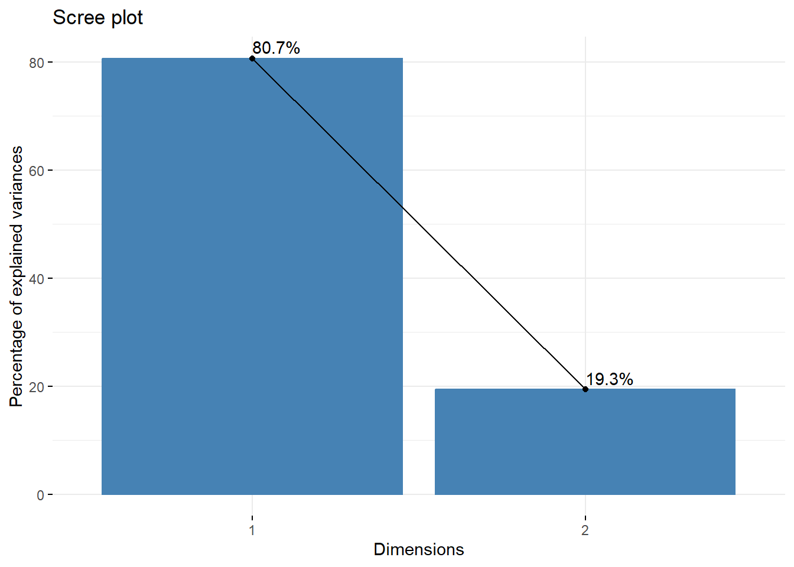

The aim of Principal component analysis (PCA) is to reduce the dimensionality of multivariate data while preserving the variability present in the data. The principal components derived from the dataset are orthogonal variables represented by linear combinations of the original variables which maximize variance. The first principal component (PC) captures the most variance, followed by the second orthogonal principal component, and so on. There can be as many PCs as there are variables in the original data, but the technique is typically used to simplify high-dimension data for improved interpretability. Principal components can be calculated using eigenvalue decomposition or the singular value decomposition (SVD) of the data matrix, so data must be preproccesed and several assumptions met for PCA to yield meaningful results.
4.1 Assumptions
For PCA to be effective, the data should be continuous (although adaptations of PCA exist for other numeric data structures) and normally distributed, although the the distribution of the data does not truly matter when utilizing PCA as an exploratory methodology. More importantly, the data should be linearly related or the linear combinations of the principal components cannot meaningfully capture the variance of the data. Ideally, the variables should be similar in scale and free from extreme or missing values, although this can be addressed in preprocessing, and implementations of PCA such as robust PCA have been developed to address these challenges. [1]
4.2 Preprocessing
Preprocessing data for PCA is straightforward. Missing data should be handled using a method appropriate for the dataset, such as imputation based on the mean or median of the variable observations. After this the variables should be centered and scaled, to a mean of 0 and a standard deviation of 1, although statistical software libraries for SVD and PCA may include this as an option within the function. [2]
4.3 Eigenvectors
PCA uses eigenvectors and their corresponding eigenvalues to calculate the principal components; a brief overview is given here. Eigen is a German word meaning inherent or characteristic, and an eigenvector can be described geometrically as a nonzero vector \(a\) of a linear transformation matrix \(M\) which does not change direction when the transformation is applied; the only change that occurs is a scaling by factor \(\lambda\), the eigenvalue of the eigenvector \(a\). Such a characteristic vector is useful in PCA, where the goal is to maximize variance while reducing dimensionality, and in this context the eigenvectors and eigenvalues can be thought of as the inherent components of the dataset which contain the most important information. Eigenvalues can be calculated from the characteristic polynomial of the matrix, by taking the determinant of \(M - \lambda I\), where \(I\) is the identity matrix. Setting this expression equal to zero allows the calculation of the eigenvalues as the roots of the characteristic polynomial; the resulting equation is called the characteristic equation:
\[
det(M - \lambda I) = 0
\tag{4.1}\]
An eigenvalue \(\lambda_k\) can be used to solve for some eigenvector \(a_k\) with the equation \((M - \lambda I)a = 0\). With PCA, we can use the eigenvectors of the covariance matrix to compute the PCs. [3]
4.4 Principal Component Analysis
In this approach to PCA, SVD is used to extract the most information (variance) from the data matrix while reducing the dimensionality of the data. The first principal component will have the largest possible variance (also called inertia), whose value is defined as a factor score. Factor scores represent a geometric projection of the observations onto the PCs. The second PC, orthogonal to the first, has the second largest variance, and the third PC would continue this pattern. The calculation of PCs via SVD can be understood with the use of matrix operations on a dataset. [4]
4.4.1 Centering and Scaling
Let our dataset be represented by the \(N \times P\) matrix \(X\) comprised of \(N\) observations of \(P\) variables in the data set, where any element \(x_{np}\) represents the \(n\)th observation of variable \(p\) in the dataset. The matrix \(X\) has rank \(A\) where \(A \leq min\{N, P\}\). The data in \(X\) is centered and scaled, such that the mean of each column \(X_p\) is 0 and every \(x_{np}\) has been standardized with unit variance. We can represent this with the formula:
The aim of PCA is to find some linear combination of the columns of \(X\) which maximizes the variance. If we define \(a\) as a vector of constants \(a_1, a_2, a_3, …, a_p\), then \(Xa\) represents the linear combination of interest. The variance of \(Xa\) is represented by \(var(Xa) = a^TSa\), with the covariance matrix \(S\), and \(T\) representing the transpose operator. Finding the \(Xa\) with maximum variance equates to finding the vector \(a\) which maximizes the quadratic \(a^TSa\), where \(a^Ta = 1\). We can write this as \(a^TSa - \lambda(a^Ta-1)\), with the Lagrange multiplier \(\lambda\). [5] Equating this expression to the null vector \(0\) allows us to differentiate with respect to \(a\):
\[
Sa - \lambda a = 0 \Rightarrow Sa = \lambda a
\tag{4.3}\]
Therefore, \(a\) is a unit-norm eigenvector with eigenvalue \(\lambda\) of the covariance matrix \(S\). The largest eigenvalue of \(S\) is \(\lambda_1\) with the eigenvector \(a_1\), which we can define for any eigenvector \(a\):
Any \(p \times p\) real symmetric matrix has exactly \(p\) real eigenvalues \(\lambda_k\) for \(k = 1,...,p\). The corresponding eigenvectors of these eigenvalues can be defined to form an orthonormal set of vectors such that \(a_k^Ta_{k^T} = 1\) if \(k = k^T\) and zero otherwise. If we consider that \(S\) is such a matrix and impose the restriction of orthogonality to the different coefficient vectors of \(S\), the full set of eigenvectors of \(S\) represent the solutions to finding linear combinations \(Xa_k\) which maximize variance while minimizing correlation with prior linear combinations. \(Xa_k\) then represent the linear combinations which are the principal components of the dataset with eigenvectors \(a_k\) and eigenvalues \(\lambda_k\). The elements of \(Xa_k\) are the factor scores of the PCs, while the elements of the eigenvectors \(a_k\) represent the loadings of the PCs. [1]
4.4.3 Singular Value Decomposition
Next we define the singular value decomposition of \(X\). Let \(L\) be the \(N \times A\) matrix of left singular vectors of the matrix; that is, the columns of \(L\) are made up of the eigenvectors of \(XX^T\). Let \(R\) be the \(P \times A\) matrix of right singular vectors; the columns of \(R\) are made up of the eigenvectors of \(X^TX\). Finally, let \(D\) be the diagonal matrix of singular values, meaning the singular values in \(D\) are the square roots of the eigenvalues of \(XX^T\) and \(X^TX\), and \(D^2\) is defined as the diagonal matrix of the non-zero eigenvalues. We can define the singular value decomposition of matrix \(X\) as:
\[
X = LD{R}^T
\tag{4.5}\]
In this context, the eigenvalues represent the variances of the principal components and summarily contain the important information for the dataset, and we can obtain the PCs of \(X\) from the SVD. [6] With the identity matrix \(I\), the \(I \times R\) matrix of factor scores can be expressed as:
\[
F = LD
\tag{4.6}\]
These factor scores are calculated from the coefficients of the linear combinations in matrix \(R\), which can be defined as a projection matrix of the original observations onto the PCs, i.e. the product of \(X\) and \(R\):
\[
F = LD = LDR^TR = XR
\tag{4.7}\]
The matrix \(R\) is also referred to as a loading matrix, and \(X\) is often described as the product of the factor score matrix and the loading matrix:
\[
X = FR^T
\tag{4.8}\]
with the decomposition of \(F^TF = D^2\) and \(R^TR = I\).
The loadings represent the weights of the original variables in the computation of the PCs; in other words, the correlation from -1 to 1 of each variable with the factor score.
In a geometric interpretation of PCA, the factor scores measure length on the Cartesian plane. This length represents the projection of the original observations onto the PCs from the origin at \((0, 0)\). This is especially useful as a visualization of higher dimension data in two dimensions by utilizing the first two PCs which capture the most variance in the original data. [7]
4.5 Interpretation of the Principal Components
There are several ways to interpret the PCs derived from the analysis. Since the eigenvalues represent the variance of the PCs, the proportion of the eigenvalues explain the proportion of variation in the dataset. Using a scree plot, these eigenvalues are plotted to show how much variation each PC explains. Another commonly used tool is a biplot, a combination of the plots of the factor scores (points) and the loadings (vectors) for two PCs (typically PC1 and PC2). The biplot is meant to visually capture the relationship between the original variables and the principal components. Clusters of points represent highly correlated variables, and vector lengths represent the variability captured in that direction on the principal component axis. While many methods and tools exist to interpret the results of PCA, the usefulness of each depends on the needs of the analysis. [3]
4.6 Step-by-Step Calculation of Principal Component Analysis
Example: In this illustration, we have access to the two grades of four students in a statistics subject. We aim to employ Principal Component Analysis (PCA) as a means to reduce the dimensionality from two variables to a singular variable. This transformation will effectively represent students’ performance in the subject with a more compact and interpretable measure. The example is adopted from “PCA problem” posted by EduFlair KTU CS on Youtube.com.
Warning: package 'MASS' was built under R version 4.3.1
library(factoextra)
Loading required package: ggplot2
Warning: package 'ggplot2' was built under R version 4.3.1
Welcome! Want to learn more? See two factoextra-related books at https://goo.gl/ve3WBa
<<<<<<< HEAD
library(ggplot2)#Import Example Datadata =data.frame(Student =1:4, BasicStats=c(4,8,13,7), AdvancedStats=c(11,4,5,14))dim(data)
[1] 4 3
#Structure of Datastr(data) #check variable types which matters in PCA
=======
library(ggplot2)#Import Example Datadata =data.frame(Student =1:4, BasicStats=c(4,8,13,7), AdvancedStats=c(11,4,5,14))dim(data)
[1] 4 3
#Structure of Datastr(data) #check variable types which matters in PCA
>>>>>>> 73f097c4e08a80bd1a09c2ca710060095e03b679
'data.frame': 4 obs. of 3 variables:
$ Student : int 1 2 3 4
$ BasicStats : num 4 8 13 7
$ AdvancedStats: num 11 4 5 14
<<<<<<< HEAD
summary(data) #details about variable scales and missing values
=======
summary(data) #details about variable scales and missing values
>>>>>>> 73f097c4e08a80bd1a09c2ca710060095e03b679
Student BasicStats AdvancedStats
Min. :1.00 Min. : 4.00 Min. : 4.00
1st Qu.:1.75 1st Qu.: 6.25 1st Qu.: 4.75
Median :2.50 Median : 7.50 Median : 8.00
Mean :2.50 Mean : 8.00 Mean : 8.50
3rd Qu.:3.25 3rd Qu.: 9.25 3rd Qu.:11.75
Max. :4.00 Max. :13.00 Max. :14.00
<<<<<<< HEAD
#Based on Info from Summary: handle missing values and exclude categorical variable#na.omit(data) No missing values heredata_sample = data[,-c(1)] #exclude categorical variable#Run PCAdata_pca =prcomp(data_sample, scale =TRUE)#Summary of Analysissummary(data_pca)
=======
#Based on Info from Summary: handle missing values and exclude categorical variable#na.omit(data) No missing values heredata_sample = data[,-c(1)] #exclude categorical variable#Run PCAdata_pca =prcomp(data_sample, scale =TRUE)#Summary of Analysissummary(data_pca)
>>>>>>> 73f097c4e08a80bd1a09c2ca710060095e03b679
Importance of components:
PC1 PC2
Standard deviation 1.2700 0.6221
Proportion of Variance 0.8065 0.1935
Cumulative Proportion 0.8065 1.0000
<<<<<<< HEAD
#Elements of PCA Object (all outputs of PCA analysis)names(data_pca)
[1] "sdev" "rotation" "center" "scale" "x"
#sdev:standard deviation#rotation: eigenvectors (loadings per variable within each PC)#center: mean of the original variable#scale: standard deviations of the original variable#x:principal component values/scores#Scree Plot of Variancefviz_eig(data_pca,addlabels =TRUE)

#Biplot with Default Settingsfviz_pca_biplot(data_pca)
#Elements of PCA Object (all outputs of PCA analysis)names(data_pca)
[1] "sdev" "rotation" "center" "scale" "x"
#sdev:standard deviation#rotation: eigenvectors (loadings per variable within each PC)#center: mean of the original variable#scale: standard deviations of the original variable#x:principal component values/scores#Scree Plot of Variancefviz_eig(data_pca,addlabels =TRUE)
#Biplot with Default Settingsfviz_pca_biplot(data_pca)
I. T. Jolliffe and J. Cadima, “Principal component analysis: A review and recent developments,”Philosophical transactions of the royal society A: Mathematical, Physical and Engineering Sciences, vol. 374, no. 2065, p. 20150202, 2016.